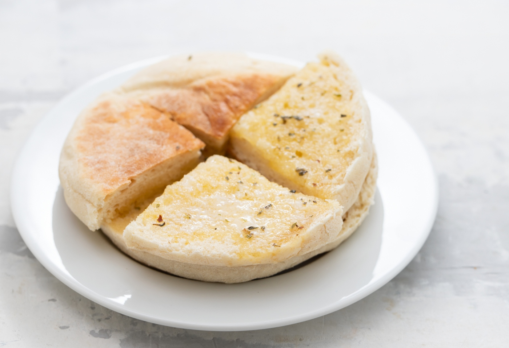
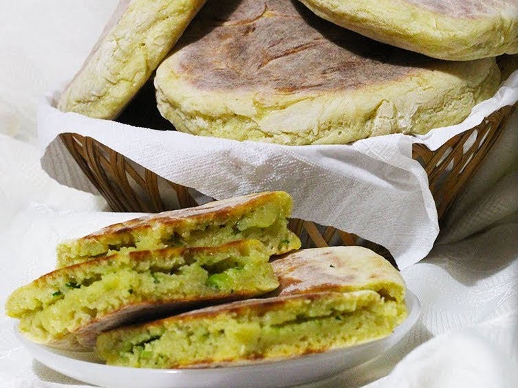
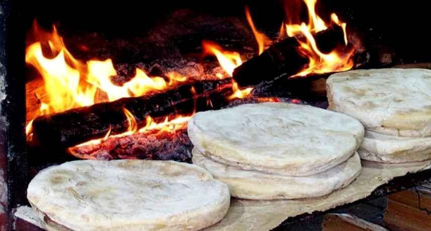

Bolo do Caco
Autor: Filipa Gomes
Publicado a 14 de setembro de 2022.

Bolo do Caco é uma receita portuguesa, da Ilha da Madeira, de um pão de frigideira feito com batata-doce e farinha de trigo. É um pão ligeiramente salgado, com uma massa leve e casca fina.
Igredientes
- 150 g Batata-Doce Assada
- 150 ml Água Morna
- 10 g Fermento fresco de padeiro
- 1 colher de sopa de açúcar
- 250 g Farinha de Trigo sem fermento
- 1 Colher de chá de sal fino
- Farinha Qb para polvilhar
- Manteiga de alho
- 4 Colher de sopa de manteiga com sal
- 1 Dente de Alho
- Coentros frescos Qb

Intruções
- Aqueça o forno nos 180º e asse batata doce com pele embrulhada em papel de alumínio durante cerca de 1hora.
- A seguir acrescente 10g de fermento fresco de padeiro em água morna, acrescente 1 colher de sopa de açúcar e misture.
- Coloque 250 g de farinha de trigo na taça da batedeira, adicione 1 colher de chá de sal fino, o fermento dissolvido e 150g de batata doce esmagada.
- Acrescente a restante água morna e amasse por 10 minutos, deixe a levedar até ter o dobro do volume.
- Quando isso acontecer deite sobre a bancada, volte a amassar e forme um chouriço, corte em 6 pedaços e depois achate para que fique em forma de disco.
- Deixe os bolos levedarem por mais 15 minutos e depois leve a assar numa frigideira de ferro bem quente.
- Enquanto isso faça a manteiga de alho: junte 3 colheres de sopa de manteiga amolecida, 1 dente de alho esmagado, coentros picados e misture tudo.
- Barre no pão ainda quente e delicie-se.

Mais receitas